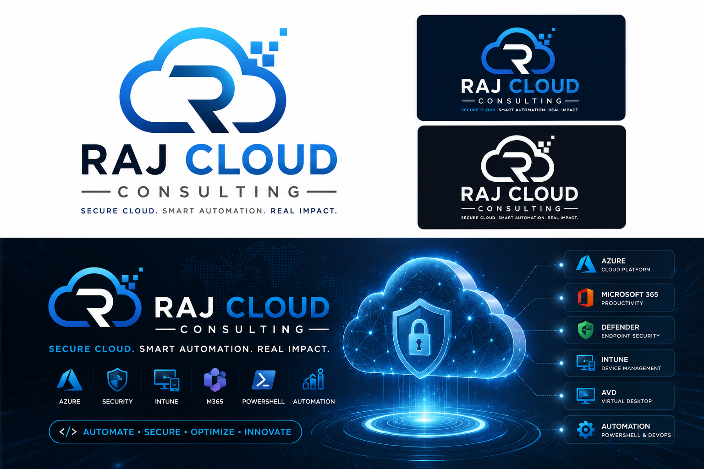

Available for remote Microsoft cloud consulting
Azure • Microsoft 365 • Security • Automation
Engineering secure Microsoft cloud platforms through automation.
Practical delivery across Azure, Microsoft 365, Intune, Defender, Azure Virtual Desktop, networking and PowerShell—designed for enterprise operations, governance and security.
Azure
Intune
Defender XDR
AVD
PowerShell
Microsoft 365
AZURE
Interactive architecture
Hover or select a technology node
Explore how each area connects to cloud operations and security engineering.
0
Public scripts
0
Technology areas
0
Core Microsoft domains
0
Security-first approach
Overview
Updated just now
Cloud engineering command centre
Live service topologyInteractive
Azure
Intune
Defender
M365
AVD
Secure Score trendImproving
92%
Example visual showing governance and security improvement focus.
Recent automationLive
Endpoint health validation
Private endpoint DNS test
AVD image readiness review
Azure tag compliance report
Platform healthOperational
AzureHealthy
Microsoft 365Healthy
DefenderHealthy
IntuneHealthy
Security
Security operations view
Security-first engineering
Endpoint protection, attack-surface reduction, indicator validation and cloud governance are presented as an integrated operational capability.
Open Defender health script →Automation
PowerShell automation workspace
PS C:\Cloud> Invoke-RajCloudAutomation
✓ Connected to Azure context
✓ Endpoint compliance checked
✓ Security report generated
✓ Operational validation complete
✓ Connected to Azure context
✓ Endpoint compliance checked
✓ Security report generated
✓ Operational validation complete
Repeatable operations
Scripts are structured to support safe testing, clear outputs, validation and controlled production use.
Browse automation catalogueEndpoints
Modern endpoint management
Architecture
Connected Microsoft cloud platform

Consulting services
Enterprise-focused Microsoft engineering
Architecture, troubleshooting, automation and security improvement delivered with clear documentation and operational handover.
Azure & Microsoft 365
Cloud governance, identity, administration, secure connectivity and operational improvement.
- Azure RBAC and governance
- Microsoft 365 administration
- Private endpoint and DNS design
Intune & Windows
Modern endpoint management, Windows 11 deployment and policy-driven configuration.
- Detection and remediation
- Application deployment
- Compliance and hardening
Security & Defender
Endpoint protection, security posture review, attack-surface reduction and investigation support.
- Defender health and onboarding
- IOC validation workflows
- Security baseline assessment
PowerShell Automation
Reusable operational tooling that reduces repetitive work and improves consistency.
- Reporting and health checks
- Bulk administration
- Safe remediation tooling
Interactive architecture
From endpoint to cloud security
Select a component to view the engineering focus and related public tooling.
Operational experience
Practical engineering, not just theory.
The portfolio demonstrates real-world troubleshooting patterns, repeatable automation, security-first decisions and documentation suitable for enterprise environments.
01
Cloud operationsAzure governance, private connectivity, VM reporting and Key Vault validation.
02
Endpoint engineeringIntune remediations, Windows configuration, application and health checks.
03
Security operationsDefender, IOC workflows, authenticated scan readiness and SIEM support.
04
AutomationPowerShell tooling for repeatable administration and controlled change.
PS C:\Cloud> ▋
Technical dashboard
Portfolio coverage at a glance
Governance, networking, identity and compute
Compliance, remediation and Windows deployment
Protection, health, indicators and hardening
Reporting, deployment and operational tooling
Public script library
Reusable technical tools
Sanitised samples covering Intune, Azure, AVD, Microsoft 365, security, networking and operations.
Intune.ps1
Windows & Edge Copilot Controls
Detection and remediation patterns for Copilot-related Windows and Edge policy settings.
Set-RegistryDWORD
TurnOffWindowsCopilot = 1
Download script →
TurnOffWindowsCopilot = 1
Azure.ps1
Azure Resource Tag Compliance
Reports Azure resources missing required governance tags.
Get-AzResource
MissingTags = Owner, Environment
Download script →
MissingTags = Owner, Environment
Security.ps1
Defender Health Report
Reports antivirus, real-time protection, cloud protection and signature status.
Get-MpComputerStatus
RealTimeProtectionEnabled = True
Download script →
RealTimeProtectionEnabled = True
Network.ps1
Private Endpoint DNS Test
Validates aliases, addresses and expected private resolution behaviour.
Resolve-DnsName
PrivateEndpoint = True
Download script →
PrivateEndpoint = True
AVD.ps1
AVD Image Readiness
Checks Teams, FSLogix, pending restart and image preparation indicators.
Test-AVDImageReadiness
Status = Ready
Download script →
Status = Ready
Explore all 23 public scripts
Browse the complete sanitised catalogue with documentation and category links.
View catalogueBrand identity
Secure cloud. Smart automation. Real impact.
A dedicated visual identity designed for a modern Microsoft cloud and security consultancy.
Start a conversation
Need help with your Microsoft environment?
Available for architecture reviews, troubleshooting, PowerShell automation, endpoint management and cloud security improvement.
Consulting availability
Remote delivery • UK based
Microsoft cloud engineering, security, automation and operational support.
Discuss a project